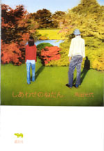
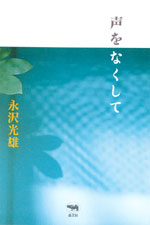
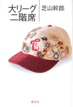
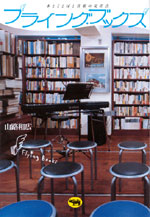
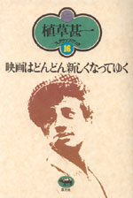
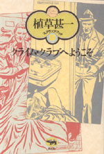
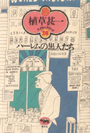
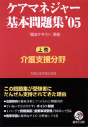
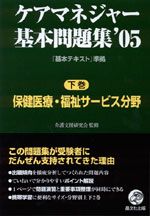

|

|
エッセイ |
| しあわせのねだん | |
| 角田光代 | |
| 四六 判 200頁 | |
| 定価1470円（本体1400円） | |
| 4-7949-6668-7 C0095 | |
| お金には無頓着。だけど、ほしいものはどうしてもほしい！そんな直木賞作家が、お金にまつわるひたむきな思いと体験を綴った。魅惑の電化製品。輝かんばかりの女になるための化粧品。母との忘れられない旅。それらはいくらで、手に入れたのはなんだったのか。お金は何をしてくれて、何をしてくれないのか。日々と物欲のくらしから垣間見た、幸福のかたち。 |
 |
がん・エッセイ |
| 声をなくして | |
| 永沢光雄 | |
| 四六判 304頁 | |
| 定価1890円（本体1800円） | |
| 4-7949-6669-5 C0095 | |
| 『AV女優』などの話題作でインタビューの名手として知られる永沢光雄が下咽頭ガンを患い、手術で一命をとりとめたものの、声を失った。その声をなくしたインタビュアーが自らの闘病生活を1年にわたり赤裸々につづった日記。ガンの後遺症で起きあがることもままならない日々を、ユーモアに満ちた筆致で、時にはおかしく、時には悲しく描いている。 |
 |
スポーツ |
| 大リーグ二階席 | |
| 芝山幹郎 | |
| 四六判 344頁 | |
| 定価2415円（本体2300円） | |
| 4-7949-6659-8 C0075 | |
| 野茂が道を切り開いた大リーグに、イチローがゴジラ松井がリトル松井らが続き、存在感を見せつけている。彼らの活躍は、アメリカ野球の醍醐味と奥深さを教えてくれる。間もなく今年も開幕だ。イチローのゴジラの今季はどうだろう。その可能性をはじめ、大リーグの楽しみ方と懐の深さをやさしく教えてくれる。 |
 |
古本・エッセイ |
| フライング・ブックス 本とことばと音楽の交差点 |
|
| 山路和広 | |
| A5判 256頁 | |
| 定価1995円（本体1900円） | |
| 4-7949-6660-1 C0095 | |
| 古本＋カフェ＋イベント、それが「フライング・ブックス」だ。店内にはカルチャー関係の本や雑誌が並び、詩の朗読会には若者がつめかけ、今では渋谷の歓楽街に欠かせない「文化の交差点」である。店の立ち上げからアメリカ西海岸古書買付ツアー、音楽レーベル立ち上げなどを綴ったニューウエーブな古本屋の書き下ろしノンフィクション。 |
 |
映画 |
| 植草甚一スクラップ・ブック 16巻 第9回配本 映画はどんどん新しくなってゆく |
|
| 植草甚一 | |
| 四六判 272頁 | |
| 定価1470円（本体1400円） | |
| 4-7949-2576-X C0370 | |
| 映画の基本は実験精神にある。かずかずのアヴァンギャルド映画の話から、ヌーヴェル・ヴァーグ、ビート・シネマ、アンダーグラウンド・シネマまで、新しい映像の創造に挑んだ世界の若いシネアストたちの冒険を語って飽きることを知らない。シネマディクトJJの真骨頂を発揮。（解説・小野耕世） |
 |
エッセイ |
| 植草甚一スクラップ・ブック 18巻 第9回配本 クライム・クラブへようこそ |
|
| 植草甚一 | |
| 四六判 240頁 | |
| 定価1470円（本体1400円） | |
| 4-7949-2578-6 C0397 | |
| ミステリ・ファンにとっては、いまや幻の『クライム・クラブ』。JJ氏が監修し、米・英・仏の新作をいち早く紹介して、その意欲的編集で日本の推理界にも大きな影響を与えたのがこの双書だ。驚くべき精緻さで綴られた全巻の解説を収録。（解説・佐野洋） |
 |
エッセイ |
| 植草甚一スクラップ・ブック 20巻 第9回配本 ハーレムの黒人たち |
|
| 植草甚一 | |
| 四六判 240頁 | |
| 定価1470円（本体1400円） | |
| 4-7949-2580-8 C0370 | |
| アメリカの黒人たちは何を考え、どのように生きてきたのか？ 黒人が生み出したと言われているジャズの世界でも人種差別が問題になっている。ハーレムの暴動やコロンビア大学のストから、文学やニューミュージックの話題まで、ブラック・パワーの熱い爆発を語る。（解説・岩浪洋三） |
  |
ケアマネジャー |
| ケアマネジャー基本問題集'05 (上巻)介護支援分野 (下巻)保健医療・福祉サービス分野 | |
| 介護支援研究会監修 | |
| A5判 | |
| 上巻ー264頁(未定)定価1680円（本体1600円） 4-7949-7585-6 C0036 | |
| 下巻ー312頁(未定)定価1890円（本体1800円） 4-7949-7586-4 C0036 | |
| 第8回介護支援専門員試験に向けての問題集。今年度の介護保険制度の大幅な改正について、巻末に「制度改正の要点」を収録した。『基本テキスト』に準拠して掲載頁を表記している。携帯学習に便利なA5の判型と充実した「ポイント解説」は、7回を重ねる過去の受験者から圧倒的な好評を博し、「この問題集の繰り返し学習だけで合格した」という声も多く寄せられている。 |